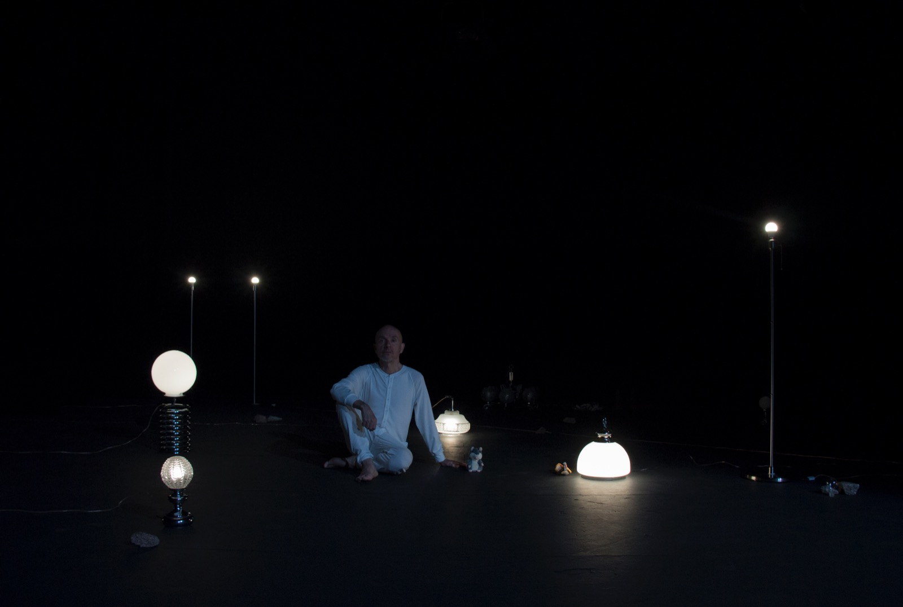
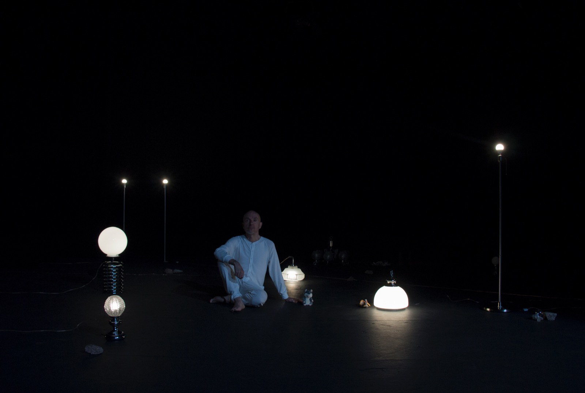
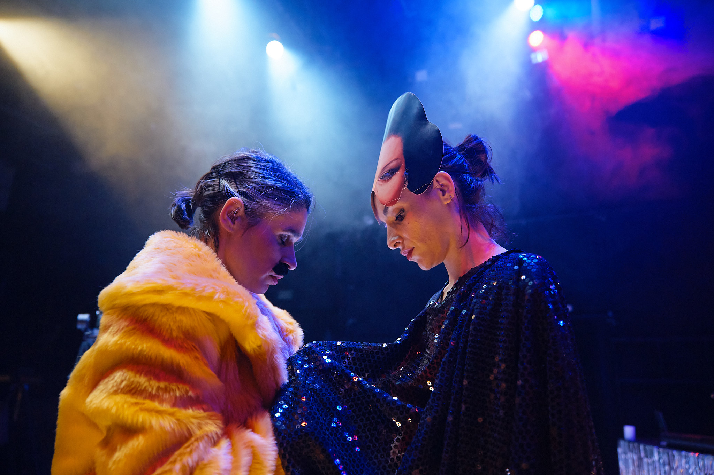
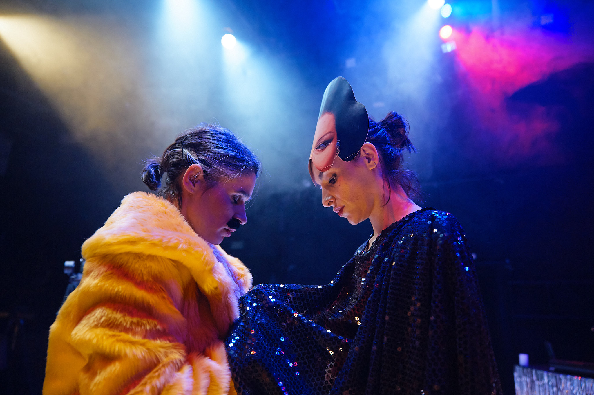
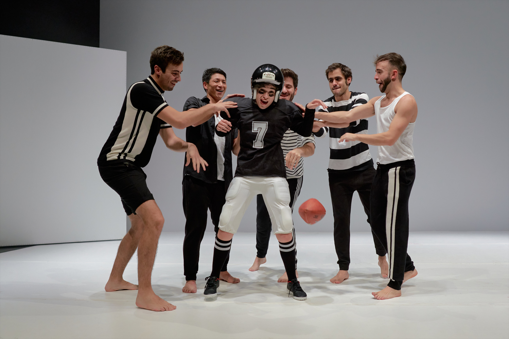
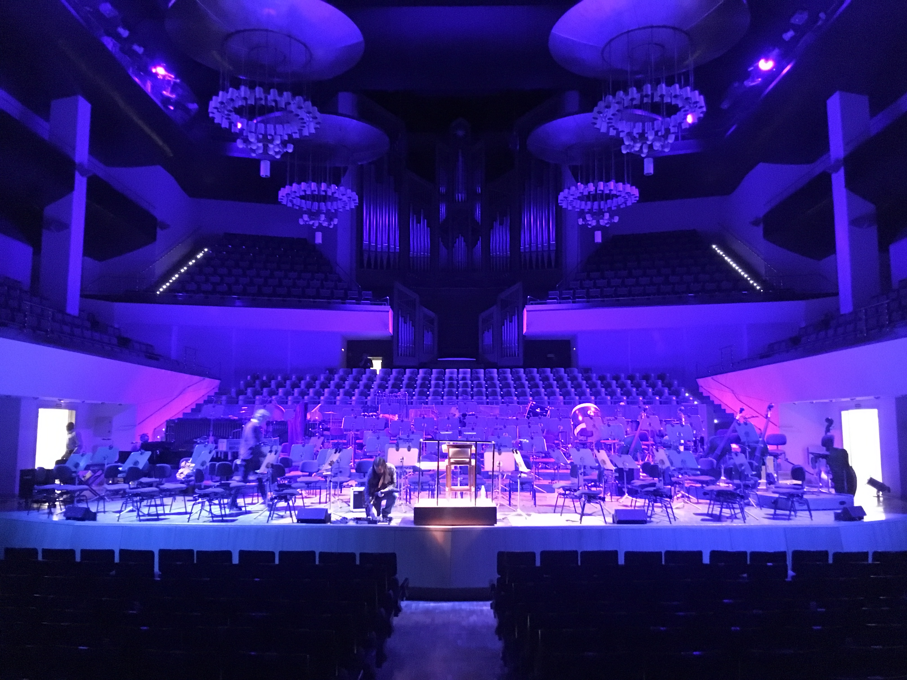
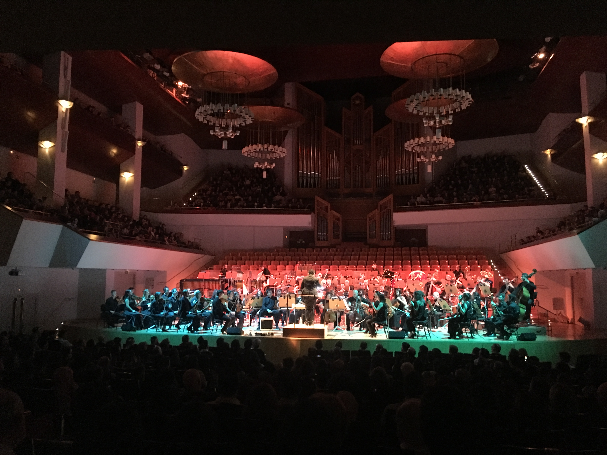
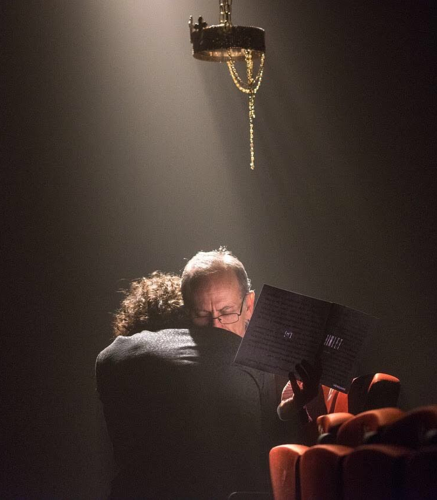
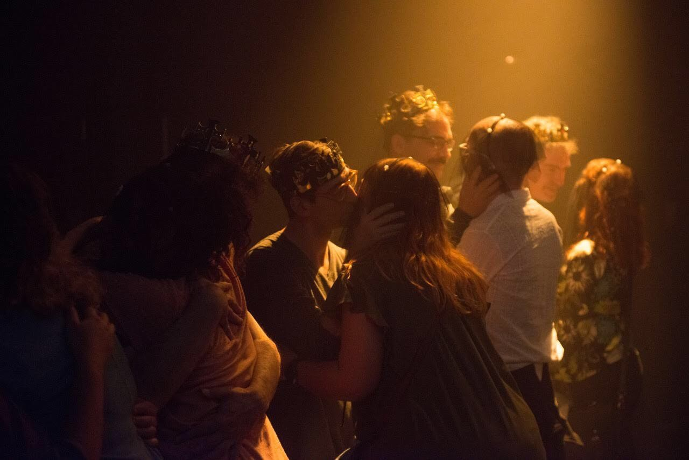
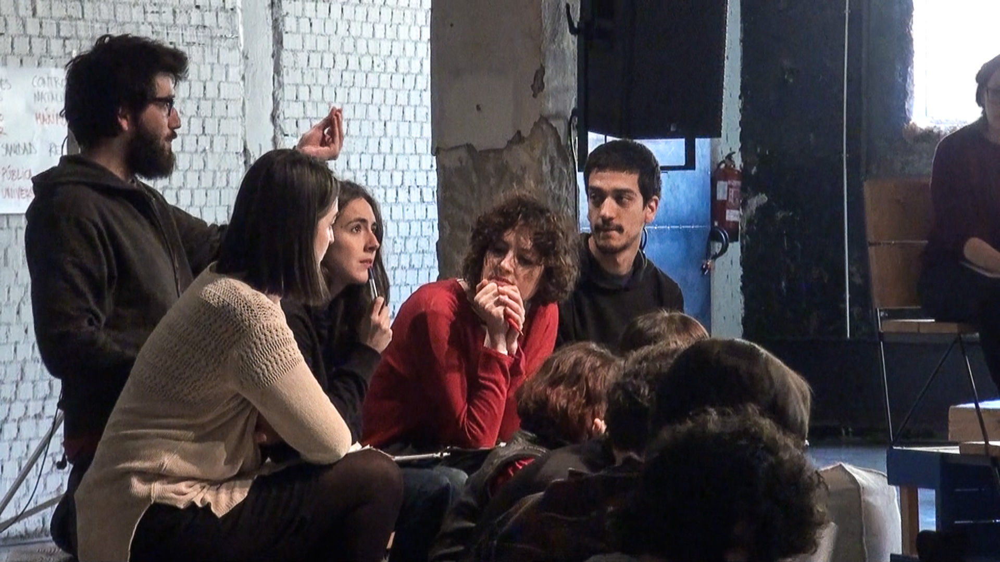

Fidelio, op. 72 Ludwig van Beethoven
Orquesta y Coro Nacionales de España
Equipo artístico
Dirección: David Afkham
Director asistente: Luis Toro Araya
Concepto escénico: Helena Pimenta
Asistente de dirección de escena: José Tomé
Iluminación: Miguel Ruz Velasco
Regidora: Cristina Berhó
Regidor de luces: Enrique Montesdeoca
Reparto:
Maximilian Schmitt (Florestan)
Eleanor Lyons (Leonore)
Peter Rose (Rocco)
Werner Van Mechelen (Pizarro)
Elena Sancho (Marzelline)
Roger Padullés (Jaquino)
Matthias Winckhler (Don Fernando)
Joaquín Notario (Narrador)
Fernando Aguilera (Prisionero 1)
Federico Gallar (Prisionero 2) *Miembros del CNE
Miguel Ángel García Cañamero:Director del CNE
Fotografía: Rafa Marín
Enlace web: link web


El futuro - manual de instrucciones
El pollo campero. Comidas para llevar
Citemor 2024. Residencia de creación. Coproducción. Site-specific
Equipo artístico
Creación: El pollo campero
Iluminación y espacio: Miguel Ruz Velasco
Diseño sonoro y DJ: Vanesa Rodrigo
Texto: Cris Celada
Imagen: Alejandro Andújar
Fotografía: Susana Paiva
Enlace web: link web
Enlace web: link web


Obra imposible
Los bárbaros
CCC Conde Duque
Equipo artístico
Creación: Los bárbaros
Dramaturgia y dirección: Javier Hernando y Miguel Rojo
En escena: Jesús Barranco y Rocío Bello
Iluminación: Miguel Ruz Velasco
Vestuario: Rocío Bello
Diseño sonoro: Pilar Calvo
Alumno en prácticas Máster ESADCYL: Julián Segovia
Fotografía: Javier Hernando
Producción: Los bárbaros
Enlace web: link web
Enlace web: link web


Pequeño cúmulo de abismos
Centro Dramático Nacional
Equipo artístico
Dirección: Cris Blanco
Dramaturgia: Rocío Bello, Cris Blanco, Óscar Bueno, Anto Rodríguez
Reparto: Oihana Altube, Rocío Bello, Cris Blanco e Íñigo Rodríguez-Claro
Escenografía: Pablo Chaves
Iluminación: Miguel Ruz Velasco
Vestuario: Jorge Dutor
Diseño sonoro: Carlos Parra
Vídeo: Marta Orozco
Ayudante de dirección: Marta Orozco
Ayudante de escenografía: Lia González Álvarez
Fotografía: Geraldine Leloutre
Tráiler: Macarena Díaz
Diseño de cartel: Equipo SOPA
Producción: Centro Dramático Nacional, Cris Blanco y Festival Grec de Barcelona
Enlace web: link web


El futuro
El pollo campero. Comidas para llevar
CITEMOR 2023. Residencia de creación. Coproducción. Site-specific
Equipo artístico
Idea y dirección: Cristina Celada
Texto: Cristina Celada em colaboração com Rosa Romero
En escena: Rosa Romero e Cristina Celada
Dirección técnica y diseño de iluminación: Miguel Ruz Velasco
Escenografia, vestuario y accesorios: Alejandro Andújar
Diseño sonoro: César Barco Manrique
Videocreación: Indi Costa
Técnica de sonido: Vanesa Rodrigo
Producción: Inés Lambisto
Imagen cartel: Eugenio Arrogante
Vídeo y teaser Andrés Pino - Conjunto Vacío
Con apoyo de: La Caldera e Instituto Ramon Llull
Fotografía: Susana Paiva
Vídeo y teaser Andrés Pino - Conjunto Vacío
Enlace web: link web
Enlace web: link web


La vida es sueño [el auto sacramental] de Calderón de la Barca
Compañía Nacional de Teatro Clásico
Equipo artístico
Dirección: Carlos Tuñón
Dramaturgia: Gon Ramos, Luis Sorolla, Carlos Tuñón y el equipo del Ensamble
Reparto: Ensamble. Ales Alcalde, Paula Amor, Mayte Barrera, Irene Doher, Pablo Gómez-Pando, Amanda H C, Antiel Jiménez, Daniel Jumillas, Caterina Muñoz, Rosel Murillo Lechuga, Alejandro Pau, Gon Ramos, Patricia Ruz, el Primo de Saint Tropez, Nacho Sánchez, Irene Serrano, Luz Soria y Luis Sorolla junto con el resto del Equipo artístico.
Espacio y plástica: Antiel Jiménez
Iluminación: Miguel Ruz Velasco
Vestuario: Paola de Diego
Sonido y música Nacho Bilbao
Movimiento: Patricia Ruz
Asesora verso: Irene Serrano
Asesor teórico: Sergio Adillo
Fotografía: Luz Soria
Producción: [Los números imaginarios]
Directora de producción: Rosel Murillo
Coordinadora artística / Ayudante de dirección: Mayte Barrera
Adjunta a la dirección: Paula Amor
Realización de vestuario: Marisa Sánchez
Prácticas en espacio y vestuario: Carmen Flores
Audiovisual: Ales Alcalde
Jefa técnica: Rocío Sánchez
Grabación de voces: Jumi
Técnico de sonido: Kevin Dornan
Gráfica: Rodrigo Arahuetes
Web: Quino Melguizo
Jefa de prensa y redes sociales: Amanda H C (Proyecto Duas)
Distribución: Caterina Muñoz (Caterina Producciones)
Residentes: Navel Art
Alumnas en Prácticas: Cristina Martínez y María Alejandra Rayo
Enlace web: link web


Obra infinita
Centro Dramático Nacional
Equipo artístico
Creación: Los bárbaros
Dramaturgia y dirección: Javier Hernando y Miguel Rojo
Reparto: Jesús Barranco, Rocío Bello, Cris Blanco, Elena H. Villalba, Diego Olivares, Alma P. Sokolíková y Macarena Sanz
Escenografía: Cecilia Molano
Iluminación: Miguel Ruz
Vestuario: Rocío Bello
Sonido: Felipe Lara
Ayudante de dirección: Gema R. Lirola
Ayudante de escenografía y vestuario: Almudena Bautista
Colaboración en vestuario: Carmen17 (diseños Curie y Jacaranda)
Fotografía: Luz Soria
Prácticas de Dramaturgia y Dirección: Eduardo Miura (Universidad Antonio de Nebrija)
Prácticas de Interpretación: Tomás Chazarra (RESAD)
Video: Bárbara Sánchez Palomero
Diseño de cartel: Equipo SOPA
Producción: Centro Dramático Nacional
Enlace web: link web
Obra inacabada
Los bárbaros
Teatro de la Abadía
Equipo artístico
Idea: Javier Hernando & Miguel Rojo
Creación: Rocío Bello, Javier Hernando, El primo de Saint Tropez, Miguel Rojo & Miguel Ruz
Iluminación: Miguel Ruz
Diseño de vestuario: Rocío Bello
Espacio sonoro: Pilar Calvo
Producción: Los Bárbaros
En coproducción con: Teatro de La Abadía
 


Las explicaciones
Los bárbaros
CCC Conde Duque
Equipo artístico
Un proyecto de: Javier Hernando & Miguel Rojo
Creación: Rocío Bello, Elena H. Villalba, Javier Hernando, & Miguel Rojo
En escena: Rocío Bello & Elena H. Villalba
Iluminación: Miguel Ruz
Escenografía: Javier Hernando & Miguel Rojo
Realización película: Visual Creative Producción Audiovisual
Director de fotografía y montaje: Pablo García Sanz
Sonido directo y mezcla: Miguel Sánchez González
Ayudante de cámara: Laura G. Serrano
Auxiliar de cámara y etalonaje: Héctor Martínez Cabrera
Producción: Los Bárbaros
Coproducción: Centro de Cultura Contemporánea Conde Duque
Agradecimientos: Carmen Herráez, Enrique Hernando


Terceiro Acto
Centro Dramático Gallego
Equipo artístico
Texto: Andrea Jiménez e Noemi Rodríguez, a partir de improvisacións co elenco
Dirección e dramaturxia: Andrea Jiménez e Noemi Rodríguez
Escenografía: Marta Pazos
Vestiario: Yaiza Pinillos
Iluminación: Miguel Ruz Velasco
Espazo sonoro: Hugo Torres
Coreografía: Amaya Galeote
Asistencia de dirección: Laura Míguez
Asistencia de escenografía: Carmen Triñanes
Asistencia de produción: Xandre Vázquez
Realizacións
Escenografía e utilería: Equipo técnico do CDG
Vestiario: Equipo técnico do CDG
Máscaras: Beatriz Nieto
Fotografías e vídeos: Miramemira
Deseño gráfico: Trisquelia
Coordinación e corrección de textos: Rosa Moledo


Silencio
CCC Conde Duque
Equipo artístico
Dirección: Andrea Díaz Reboredo
Mirada externa: Xavier Bobés Solà
Intérpretes: Miriam Garlo y Andrea Díaz
Espacio sonoro: Dani León
Diseño de iluminación: Miguel Ruz y Andrea Díaz
Vestuario: CajaNegra TAM
Universos objetuales: Pablo y Andrea Reboredo(s)
Asistente de producción: Anna Domingueo Enrich
Asistente de movimiento: Alba González Herrera
Información adicional
Género: Teatro visual y de objetos
Edad recomendada: Adultos y mayores de 11 años
Duración: 1 h
Idioma: Español y LSE


Mi gran noche
Teatro Fernán Gómez
Equipo artístico
Texto: Noemi Rodríguez
Dirección: Andrea Jiménez
Interpretación: Noemi Rodríguez, Darlene Rodríguez
Escenografía: Monica Borromello
Vestuario: Paola de Diego, Sigrid Blanco, Candela Ibañez
Vídeo: Ro Gotelé
Coreografía: Amaya Galeote
Iluminación: Miguel Ruz
Ayudante de dirección: Macarena Sanz
Fotografía: Danilo Moroni
Asesoría dramatúrgica: Eva Redondo Llorente
Prensa: María Díaz
Producción: Teatro En Vilo
Distribución: Proversus
Premios
Premio del Público en la Mostra Internacional de Teatro de Ribadavia

 

La Distancia
Centro Dramático Nacional
Equipo artístico
Texto: Pau Miró, Andrea Jiménez, Noemi Rodríguez y Juan Mayorga
Dirección: Andrea Jiménez y Noemi Rodríguez
Reparto
Jesús Barranco, Pablo Gallego Boutou, Alicia Rodríguez y Macarena Sanz ("La distancia" según Pau Miró)
Julia de Castro, Pablo Gallego Boutou, Juan Paños, Alicia Rodríguez, Noemi Rodríguez y Macarena Sanz ("La distancia" según Andrea Jiménez y Noemi Rodríguez)
Jesús Barranco y Julia de Castro ("La distancia" según Juan Mayorga)
Escenografía: Monica Boromello
Iluminación: Miguel Ruz Velasco
Vestuario: Guadalupe Valero
Videoescena: Álvaro Luna
Espacio sonoro: Sandra Vicente
Coreografía: Amaya Galeote
Ayudante de dirección: Pablo Gallego Boutou
Fotografía: Barbara Sánchez Palomero
Producción: Centro Dramático Nacional


Clic. Cuando todo cambia
Teatro Calderón de Valladolid
Equipo artístico
Producción: Fran Ávila y Teatro Calderón
Producción delegada: Henar Hernández
Texto: Itziar Pascual, Amaranta Osorio
Dirección de escena, movimiento, concepto espacial: Alberto Velasco
Iluminación: Miguel Ruz Velasco
Escenografía y utilería lumínica: Miguel Delgado
Vestuario: Sara Sánchez de la Morena
Ayudante de dirección: Álvaro Caboalles
Dirección artística de montaje y creación de la película: Herminio Cardiel
Dirección actores película: Alberto Velasco
Director de fotografía película: Álvaro Sanz
Sonido película: Pablo Grial, Carlos Barcenilla
Gaffer película: José Luis Medina
Eléctricos película: Cristina Vielba y José Crespo
Composición tema musical: Monterrosa
Actores: Javier Cascón, Alicia Vermell, Inés González
Actores video: Marta Ruiz de Viñaspre y Roberto Enríquez
Fotografía y diseño de cartel: Ana Pizarro
Fotografías: Vadeocio
Año de estreno: 2020


Man up
Centro Dramático Nacional
Equipo artístico
Producción: Centro Dramático Nacional
Texto y dirección de escena: Andrea Jiménez y Noemi Rodríguez
Iluminación: Miguel Ruz Velasco
Coreografía: Amaya Galeote
Escenografía: Mireia Vila Soriano
Vestuario: Yaiza Pinillos
Sonido: Nacho Bilbao
Elenco: Fernando Delgado-Hierro, Pablo Gallego Boutou, Andrea Jiménez, Alberto Jo Lee, Juan Paños, Noemi Rodríguez y Baldo Ruiz
Fotografía: MarcosGpunto
Año de estreno: 2019

Mutantes
Teatros del Canal
Equipo artístico
Coproducción: Los bárbaros, Teatros del Canal
Creación: Bruno Bouteiller, Marcos de Benito, Mario Díez, Teresa González, Javier Hernando, Duna Fernán, Iván López-Ortega, Alma Pérez, Miguel Rojo, Julia Serrano, Lucía Serrano
Concepto escenografía: Javier Hernando y Miguel Rojo
Iluminación: Miguel Ruz Velasco
Vestuario: Rocío Bello
Sonido: Pilar Calvo
En escena: Bruno Bouteiller, Marcos de Benito, Mario Díez, Teresa González, Duna Fernán, Iván López-Ortega, Alma Pérez, Julia Serrano, Lucía Serrano
Asistencia en escena: Javier Cabrera
Producción escenografía: Ilo Producciones
Fotografía: Javier Hernando
Año de estreno: 2019
«Nueve adolescentes habitan un espacio vacío. Poco a poco lo van poblando, creando un paisaje, su paisaje desde el cual poder decir, lanzarle al mundo sus propuestas para el futuro. Mientras: viven, lloran, sufren, ríen, bailan, pelean, huyen, sueñan. Mientras todo esto ocurre, mientras todo se va extrañando y muta y se enrarece, sus voces resuenan y caen como martillazos en una cuña que quisiera hacer una grieta en la roca»
- Miguel Rojo -
Lear. Desaparecer
Teatros del Canal
Equipo artístico
Diseño de iluminación
«El montaje deja muchos momentos plásticos muy bellos en su sencillez»
Hugo Álvarez Domínguez
Producción: Bella Batalla
Dirección de escena: Carlos Tuñón
Movimiento: Patricia Ruz
Ayudante de dirección y producción: Mayte Barrera
Escenografía: Antiel Jiménez
Vestuario: Antiel Jiménez y Paola de Diego
Espacio sonoro: Nacho Bilbao
Dirección técnica y sonido: Jesús Díaz
Elenco: Nacho Aldeguer, Jesús Barranco, Enrique Cervantes, Irene Doher, Pablo Gómez-Pando, Marta Matute, Alejandro Pau, Gon Ramos, Patricia Ruz, Nacho Sánchez, Irene Serrano, Luis Sorolla
Fotografía: Luz Soria
Año de estreno: 2019
Miss Mara
Teatro Circo Price
Equipo artístico
Producción: Teatro Circo Price
Proyecto impulsado por: Fátima Baeza
Dirección de escena y dramaturgia: Andrea Jiménez y Noemi Rodríguez
Diseño de iluminación: Miguel Ruz Velasco
Ayudante de dirección: Pablo Gallego
Composición musical: Lise Belperron
Coreografía: Amaya Galeote
Escenografía y vestuario: Mireia Vila Soriano
Sonido: Manu Solí, Ignacio Basurto
En la pista: Fátima Baeza, Sabrina Catalán, Graziella Galán y Lise Belperron
Rigger: Mila Martínez
Fotografía: Danilo Moroni
Año de estreno: 2019

Orfeo y Eurídice
Teatro Villamarta de Jerez
Equipo artístico
Diseño de iluminación: Miguel Ruz Velasco
«…deja apreciar la capacidad del teatro para albergar producciones de enjundia, con cambios ágiles de escena y maquinaria solvente para resolverlos. En este punto celebramos también el buen trabajo de iluminación desplegado por Miguel Ruz» — Juan José Roldán
«Vestuario, escenografía e iluminación sí que estuvieron a un gran nivel, con juegos de texturas en los vestidos y de luces y sombras en las luces que aportaron gran riqueza plástica al espectáculo» — Andrés Moreno Mengíbar
Coproducción: Teatro Villamarta y Gran Teatro de Córdoba
Dirección de escena: Rafael R. Villalobos
Dirección musical: Carlos Aragón
Escenografía y vestuario: Jesús Ruiz
Intérpretes: José Luis Sola, Nicola Beller Carbone, Leonor Bonilla y Martín Puñal
Interpretación musical: Orquesta Filarmónica de Málaga, Coro del Teatro Villamarta
Dirección del coro: José Ramón Hernández y Ana Belén Ortega
Fotografía: Manuel Aranda - Diario de Jerez
Año de estreno: 2019


Generación Why
Centro Dramático Nacional
Equipo artístico
Diseño de iluminación: Miguel Ruz Velasco
«Generación Why es un trozo de vida, un rito de paso, un canto a la juventud, un hogar itinerante, un lugar en el tiempo»
Producción: Teatro en Vilo
Creación colectiva, dramaturgia: Teatro en Vilo
Escenografía: María José Martínez
Vestuario: Julia Goldsmith, Teatro en Vilo
Elenco: Chiara Goldsmith, Andrea Jiménez, Roisin O’Mahony y Noemi Rodríguez
Fotografía: Cesar Lucas Abreu
Año de estreno: 2018


Locos de amor
Caixa Forum Madrid
Equipo artístico
Diseño de iluminación: Miguel Ruz Velasco
«A partir de las vivencias, reflexiones, recuerdos y anhelos de los participantes, junto a la fuerza evocadora de las imágenes y la música, «Locos de amor» construye un universo poético, tierno y cómico desde el que pararse a observar las relaciones humanas»
Producción: Teatro en Vilo, Centro de Rehabilitación Laboral de Carabanchel
Dramaturgia y dirección de escena: Andrea Jiménez y Noemi Rodríguez
Escenografía: Eleni Chaidemenaki, Taller de carpintería CRL Carabanchel, Emiliano Malagón, María Gozalo, Cristina Serrano
Vestuario: Sigrid Blanco y Alicia González Ávila
Maquillaje: Workshop Experience
Elenco: Geli Escudero, Gema Herradón, Juanjo Cabrera, Juan Pedro Godoy, Mariló Bernárdez, Mario Escudero, Moisés García, Noemi Rodríguez, Nuria Martínez, Sergio Ruiz
Documental y vídeo: La semilla
Año de estreno: 2018

Atlántida
Naves del Matadero
Equipo artístico
«Una pieza escénica que imagina otros mundos posibles creada en residencia en Naves Matadero por el colectivo español Los Bárbaros y la artista cubana Laura Liz Gil Echenique»
Producción: Los Bárbaros, Naves del Matadero – Centro Internacional de Artes Vivas en asociación con la Fundación Siemens
Creación: Rocío Bello, Laura Liz Gil Echenique, Javier Hernando, Miguel Rojo, Irene Ruiz & Miguel Ruz
Diseño de iluminación y escenografía: Miguel Ruz Velasco
Diseño y realización del monstruo: Cecilia Molanno & Antònia Camia
Espacio Sonoro y sonido directo: Felipe Lara
En escena: Rocío Bello, Jesús Meneses & Irene Ruiz
Asistencia en escena: Javier Cabrera
Producción ejecutiva: Jorge Rúa
Fotografía: Javier Hernando
Año de estreno: 2018
Hijos de Grecia
Corral de Comedias de Alcalá de Henares
Equipo artístico
Diseño de iluminación: Miguel Ruz Velasco
«El ambiente íntimo, épico o lleno de zozobra, lo levanta también con su luz –unas veces acerada, otras envolvente, siempre precisa-, Miguel Ruz Velasco»
José-Miguel Vila / @josemiguelvila
Producción: Bella Batalla
Dirección de escena: Carlos Tuñón
Ayte. Dirección y producción: Mayte Barrera
Dramaturgia: Gon Ramos y el ensemble, a partir de textos de las tragedias griegas
Movimiento: Patricia Ruz
Escenografía: Miguel Ruz y Antiel Jiménez
Vestuario: Antiel Jiménez y Paola de Diego
Dirección musical: Pepe Alacid
Música en directo: IMPULSIVA (Carlos Gorbe y Daniel Jumillas)
Dirección técnica y sonido: Jesús Díaz
Elenco: Nacho Aldeguer, Jesús Barranco, Irene Doher, Pablo Gómez-Pando, Marta Matute, Selu Nieto, Alejandro Pau, Gon Ramos, Patricia Ruz, Nacho Sánchez, Irene Serrano y Luis Sorolla
Fotografía: Luz Soria
Año de estreno: 2018

Mi gran noche
Equipo artístico
Texto: Noemi Rodríguez
Dirección: Andrea Jiménez
Interpretación: Noemi Rodríguez, Darlene Rodríguez
Escenografía: Monica Borromello
Vestuario: Paola de Diego, Sigrid Blanco, Candela Ibañez
Vídeo: Ro Gotelé
Coreografía: Amaya Galeote
Iluminación: Miguel Ruz
Ayudante de dirección: Macarena Sanz
Fotografía: Danilo Moroni
Asesoría dramatúrgica: Eva Redondo Llorente
Prensa: María Díaz
Producción: Teatro En Vilo
Distribución: Proversus
Estreno: 29-02-2020, Centro Niemeyer de Avilés
Premios: Premio del Público en la Mostra Internacional de Teatro de Ribadavia
Gratia Plena
Antiguo Convento de Santa María de los Reyes
Equipo artístico
Diseño de iluminación: Miguel Ruz Velasco
Producción: ICAS, Año Murillo
Dirección: Rafael R. Villalobos
Dramaturgia, dirección de escena, espacio y vestuario: Rafael R. Villalobos
Caracterización: Antiel Jiménez
Electrónica: Raúl Burrueco
Elenco: Verónica Moreno, Martín Puñal, Luis Tausía, Rosalinda Galán, Manuel Fornalino
Reparto: María Eugenia Boix, Alberto Trujillo, Isabel Gómez-Serranillos, Juan Carlos Rivera, Santiago Sampedro
Fotografía: Óscar Romero
Año de estreno: 2018

Música Series
Equipo artístico
Diseño de iluminación: Miguel Ruz Velasco
Producción: Orquesta y Coro Nacionales de España
Dirección musical: Arturo Díez Boscovich
Año de estreno: 2018


Yogur | Piano
Equipo artístico
Diseño de iluminación: Miguel Ruz Velasco
«El espacio es reducido, la iluminación eficaz, las músicas… desde los acordes de Bach a melodías que acunan y que van construyendo arquitecturas emotivas y sustanciales. El piano no es sólo un atributo cultural; es parte de la sustancia narrativa que acompaña y completa la belleza inefable de tantos momentos únicos, la emoción de sentirnos nosotros mismos»
Producción: Cía. Yogur Piano y Espacio LaBruc
Dirección de escena, dramaturgia y espacio: Gon Ramos
Espacio sonoro: Matías Rubio
Elenco: Itziar Cabello, Marta Matute, Nora Gehrig, Daniel Jumillas, Jos Ronda y Gon Ramos
Fotografía: Pablo Bonal
Año de estreno: 2018
Invisible
Equipo artístico
Diseño de iluminación: Miguel Ruz Velasco
Idea y producción: Alas Circo Teatro
Dirección de escena y escenografía: Juan Manuel Sánchez
Dramaturgia: Pepa Gil
Vestuario: Txus Buffa
Sonido: Txus Buffa
Grabación y edición audiovisual: MacShalbert Productions
Año de estreno: 2017
TITO TITO TATITIRORITIRORI EH EH
Equipo artístico
Diseño de iluminación: Miguel Ruz Velasco y realización de vídeo en escena
Producción: Los bárbaros
Con la ayuda de: Injuve
Idea: Javier Hernando & Miguel Rojo
Creación y en escena: Javier Hernando, Diego Olivares, Miguel Rojo & Miguel Ruz
Fotografía: Juan David Cortés
Año de estreno: 2017
Un cuerpo en algún lugar
"La iluminación de Miguel Ángel Ruz (que no es simplemente proyectar una luz sino crearla después de creerla) y un par de sillas ponen el resto para una obra cuya riqueza formalista y de estirpe minimalista no es caprichosa (nunca ha de serlo), por mucho que la anécdota romántica, el desgarro, sea al final casi trivial, definitivamente humorístico frente a esa imponente, cierta soledad que es casi nuestra única vestidura."
- Félix Molina
Equipo artístico
Diseño de iluminación: Miguel Ruz Velasco
Producción: In gravity
Dramaturgia y dirección de escena: Gon Ramos
Elenco: Fran Cantos y Luis Sorolla
Técnico de iluminación: Gabriel Piñero
Año de estreno: 2017

Krak
"¿Quién es Krak? Una criatura extraña, una fuerza desatada y oculta, lo que no se dice pero está contenido en los lugares recónditos de uno mismo. Esta propuesta forma parte de nuestros trabajos sobre comunidad y participación. En estas prácticas generamos contextos en los que el pensamiento individual genera colectividad."
- Miguel Rojo
Equipo artístico
Producción: Los bárbaros
Idea: Javier Hernando & Miguel Rojo
Creación: Rocío Bello, Javier Hernando, Miguel Rojo & Miguel Ruz
Fotografía: Sabrina Ceballos
Año de estreno: 2017

Elektra
"El espectador inquieto sabe dónde está y qué tiene entre manos. Aun así, siempre será una guía escuchar la obra en versión de concierto mientras se apuntan detalles escénicos que también proporcionan visualidad al espectáculo. Ha sido importante la iluminación de Miguel Ruz, muy cuidada en la orquesta, y también la propuesta escénica de Rafael R. Villalobos, limitada a los gestos mínimos y al énfasis de la acción. Nada se explica, tampoco se comenta, salvo la presencia mímica de Agamenon por el bailarín Pedro Beyärdes que se superpone como una nueva capa al relato. Todo ello implica matices de consideración que se vuelven innecesarios en tanto el resultado acierta a representar la claustrofóbica resonancia de la obra."
- Alberto González Lapuente
Equipo artístico
Producción: INAEM, Orquesta y Coro Nacionales de España
Dirección musical: David Afkham
Dirección de escena: Rafael R. Villalobos
Elenco: Lise Lindstrom, Anna Larsson, Manuela Uhl, Robert Künzli, Andrew Foster, Katja Pieweck, Francisco Javier Santiago Heras, Francesca Calero Benítez, Fernando Aguilera Martínez, Laura Vila, Ana Alàs I Jové, Lidia Vinyes Curtis, María Hinojosa, Elena Copons, Helia Martínez Ortiz, Rebeca Cardiel Moreno, Paloma Friedhoff Bello, Patricia González Arroyo, Carmen Gurriarán
Año de estreno: 2017
Hamlet entre todos
"La puesta en escena -sencilla en apariencia y desnuda de elementos, casi como hubiera sucedido en el Globe londinense, pero no olvidemos que debe funcionar como un engranaje de relojería, al alternar acciones internas y externas- conserva además un curioso sentido de la poética -fundamentales para esto la iluminación de Miguel Ruz y el espacio sonoro de Daniel Jumillas- creando con el propio público imágenes de importante fuerza expresiva."
- Hugo Álvarez Domínguez
Equipo artístico
Producción: Los Números Imaginarios
Dirección de escena: Carlos Tuñón
Escenografía y vestuario: Antiel Jiménez
Espacio sonoro: Daniel Jumillas
Elenco: Alejandro Pau, Carlos Tuñón, Pablo Gómez-Pando, Daniel Jumillas, Antiel Jiménez, Irene Domínguez, Miguel Ruz, Paloma García-Consuegra, Jesús Díaz
Fotografía: Virginia Rota, Bea Hohenleiter
Año de estreno: 2016


Las imágenes posibles
"Las imágenes posibles traza el rastro de un personaje inventado que es uno y somos todos, que es Ourique, que es su pasado y su presente, sus calles, su energía, su espíritu, su gente. Augusto Madeira Mendes se construye a través de los relatos, las memorias, las fotografías, las imágenes que hemos recopilado de los habitantes de Ourique (Portugal). También de nuestra vivencia en el pueblo, nuestro convivir con su gente, pasear por sus calles, escuchar sus historias. Es un intento de decirnos donde la imaginación, la ficción y los sentimientos cuentan lo que no suele contarse."
- Miguel Rojo
Equipo artístico
Producción: Los bárbaros
Creación: Rocío Bello, Javier Hernando Herráez, Miguel Rojo y Miguel Ruz
Año de estreno: 2016
Todo para el pueblo. Coreografías públicas
"¿Cómo sería tu país si te diesen la oportunidad de construirlo de cero? ¿Habría gobierno? ¿Sólo estaría permitido el color azul? ¿Todos seríamos vegetarianos? ¿Sólo se podría tener hijos los años pares? ¿Viviríamos en una isla sin playas? Todo para el pueblo es una pieza para construir un país entre todos donde miraremos más a la ficción, la poesía y las contradicciones que a la discusión política de cada día."
- Miguel Rojo
Equipo artístico
Producción: Los bárbaros, Intermediae
Idea: Javier Hernando Herráez y Miguel Rojo
Creación: Javier Hernando Herráez, Miguel Rojo y Miguel Ruz
Año de estreno: 2016

Casa con dos puertas…
Producción: Producciones Dogar
Dirección de escena: Victor Manuel Dogar
Escenografía: Marcos Carazo Acero
Vestuario: Natalia Alonso
Elenco: Jesús Calvo, Fernando Gómez, Javier Lago, Marta Morujo, Muriel Sánchez
Año de estreno: 2016
Dido y Eneas. A hipster tale
Producción: Teatro Real Departamento pedagógico
Dirección musical: Aarón Zapico, Ensemble Forma Antiqva
Dirección de escena y dramaturgia: Rafael R. Villalobos
Escenografía y vestuario: Mayte Agorreta
Vídeo: Ellen James
Reparto: Adriana Mayer, Diego Blázquez, Sandra Redondo, Aurora Peña, Konstantin Derri, Urszula Bardlowska, Javier Povedano, Thiago Vaz
Año de estreno: 2015, Reposición en 2018

Summer evening
Producción: Los bárbaros
Texto: Javier Vicedo Alós
Creación: Salvador Bosch, Sara Martín, José Pablo Polo, Miguel Ruz & Miguel Rojo
Asesoría dramatúrgica: Javier Hernando Herráez
Espacio sonoro: José Pablo Polo
Año de estreno: 2015

La cena del Rey Baltasar
Producción: Los Números Imaginarios
Dirección de escena: Carlos Tuñón
Vestuario: Antiel Jiménez
Elenco: Jesús Barranco, Enrique Cervantes, Alejandro Pau, Kev de la Rosa, Rubén Frías, Nacho Sánchez
Año de estreno: 2015
Kassandra-voces
Producción y adaptación: Zorzina Tzoumaka
Dirección de escena: Julia Siamou & Zorzina Tzoumaka
Vestuario: Asi Dimitrolopoulou
Actriz: Julia Siamou
Fotografía: Georgia Sietou & Stelios Danhil
Año de estreno: 2015
«La experimentada y versátil Iulia Siamou, aprovechando al máximo sus medios expresivos bien intencionados, respondió a las preguntas sin sentido de la voz “invisible”, llenando su imponente presencia con la escena atmosférica de BETON7 que, gracias a la sensibilidad estética de Miguel Ángel Ruz Velasco (¡felicitaciones Miguel!), el espacio se inundó con una luz espeluznante y penetrante, arrastrándonos al mundo de la heroína, lleno de imágenes de derramamiento de sangre, asco y violencia»
Cosas que me gustaría ver en un escenario
Producción: Los bárbaros
Creación y en escena: Ainhoa Hernández Escudero, Javier Hernando, Miguel Ruz, Macarena Sanz & Miguel Rojo
Fotografía: Georgie Pix, Anna Lyubynetska
Año de estreno: 2014
“Cada vez que salíamos del teatro nos encontrábamos bebiendo y charlando sobre las cosas que nos habría gustado ver en esa obra, qué cosas deberían ocurrir sobre el escenario, qué echamos de menos. Cosas que nos gustaría ver en el escenario es una obra sobre el amor al teatro y a la vida. Es nuestro empeño por realizar nuestros sueños, nuestros deseos, sabiendo que sólo podremos realizarlos si nos levantamos, sabiendo que fracasaremos, sabiendo que en el instante en que ocurren mueren, pero sin embargo intentándolo”
The Funamviolistas
Producción: The Funamviolistas
Dirección de escena: Rafael Ruiz
Escenografía: Marcos Carazo
Vestuario: Mayte Agorreta, Natalia Alonso
Sonido: Sergio Casanova, Enrique González
Elenco: Ana Hernández, Mayte Olmedilla y Lila Horovitz
Año de estreno: 2013
“La sencillez de la iluminación y la escenografía logran reforzar el poder y la universalidad del teatro gestual y de la música, llevándonos sí, al Théâtre des Funambules de París, pero también a los innumerables lugares y universos que hay en cada uno de nosotros”.
Premio Max: 2015